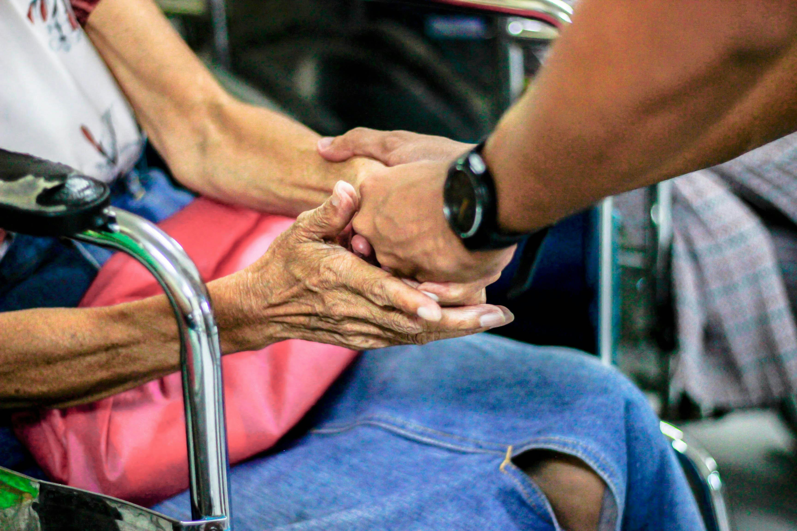

How counseling, social work, and communication turn social science knowledge into real solutions.
What is DIASS?
Disciplines and Ideas in Applied Social Sciences, commonly known as DIASS, introduces students to the practical side of social sciences. The subject explores different professions such as counseling, social work, and communication, and how these fields help individuals and communities solve real-life problems.
Through this subject, learners become familiar with the functions of these professions and how their work contributes to society. Students gain a clearer understanding of what professionals in these fields actually do and how their roles create positive change in communities.
The curriculum also encourages students to apply what they learn in real-life situations. Instead of focusing only on theories and concepts, learners analyze social issues, think critically, and propose practical solutions to community problems.
Fields in Applied Social Sciences

Counseling
Counseling focuses on helping individuals deal with emotional, psychological, and personal challenges. Counselors guide people in making healthy decisions and managing stress, anxiety, and other life difficulties.

Social Work
Social work focuses on supporting individuals, families, and communities by providing programs, services, and interventions that improve people's well-being.
Communication
Communication in applied social sciences involves spreading important information to the public through media, campaigns, and community education.
Counseling and Mental Well-Being
Counseling has many benefits for people from all walks of life. It plays an important role in supporting emotional well-being, healthy decision-making, and personal development. Counseling does not only help people during times of crisis. It also supports students, families, workers, and individuals who seek guidance in making important life decisions.
Counseling promotes mental health and emotional stability. It helps people manage stress, anxiety, and other emotional challenges.
"Mental health is an essential component of overall health and well-being."
— World Health Organization (WHO), 2022Another important benefit of counseling is strengthening relationships. It improves communication and emotional understanding between people (American Counseling Association, 2021).
Social Work: Building Strong Communities
Social work plays a major role in building caring and supportive communities. Social workers help individuals and communities face challenges such as poverty, inequality, disaster recovery, and social conflict. Their work begins with assessing the needs, strengths, and problems of a community. Through research and community immersion, social workers identify issues that affect people's lives.
Community engagement is one of the most important aspects of social work. It is not only about providing help but also empowering communities to participate in solving their own problems.
"Social workers empower communities to advocate for their needs and create positive social change."
— National Association of Social Workers
Spotlight: The Role of Social Work
Feature Article
One of the important fields discussed in DIASS is social work. Social work focuses on helping individuals, families, and communities improve their lives. Social workers assist people who are experiencing difficult situations such as poverty, discrimination, family problems, and other social challenges.
The main goal of social work is to promote social justice and improve the well-being of everyone in society. Social workers provide support through counseling, community programs, disaster response, and assistance for vulnerable groups such as children, elderly individuals, and persons with disabilities.
Social work also encourages community engagement and participation. By organizing programs such as livelihood training, health services, and educational campaigns, social workers help communities become stronger and more self-sufficient. In many communities in the Philippines, social work plays an important role in supporting families, strengthening communication, and helping individuals who need assistance. Their work ensures that people receive the support and resources necessary to improve their lives.